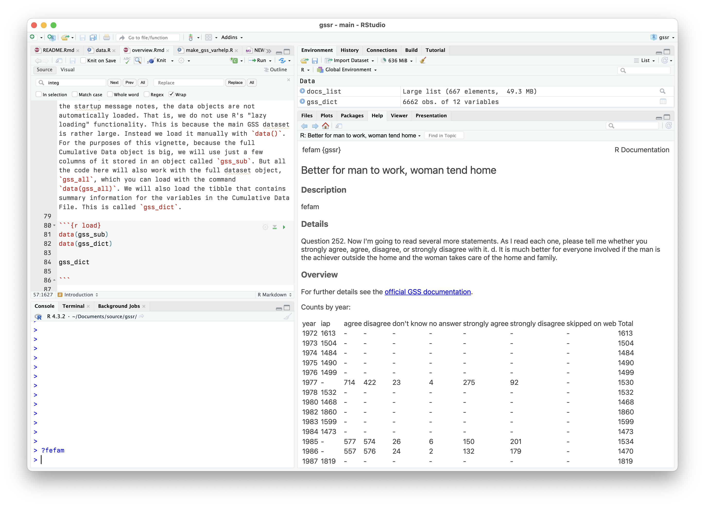

Documentation for the General Social Survey Cumulative Data (1972-2022, release 2a) packaged for easy use in R. This package is a companion to the gssr package.
Install direct from GitHub
You can install gssrdoc from GitHub with:
remotes::install_github("kjhealy/gssrdoc")Integrated Help
gssrdoc provides documentation for all GSS variables in the cumulative data file via R’s help system. You can browse variables by name in the package’s help file or type ? followed by the name of the variable at the console to get a standard R help page containing information on the variable, the values it takes and (in most cases) a crosstabulation of the variable’s values for each year of the GSS. This facility is particularly convenient in an IDE such as RStudio or Microsoft Visual Studio.

Information about the variables is also contained in the gss_dict object:
library(tibble)
library(gssrdoc)
gss_dict
#> # A tibble: 6,663 × 13
#> pos variable label missing var_doc_label value_labels var_text years
#> <int> <chr> <chr> <int> <chr> <chr> <chr> <list>
#> 1 1 year gss year… 0 gss year for… [NA(d)] don… None <NULL>
#> 2 2 wrkstat labor fo… 36 labor force … [1] working… 1. Last… <tibble>
#> 3 3 hrs1 number o… 30830 number of ho… [89] 89+ ho… 1a. If … <tibble>
#> 4 4 hrs2 number o… 70989 number of ho… [89] 89+ ho… 1b. If … <tibble>
#> 5 5 evwork ever wor… 46944 ever work as… [1] yes; [2… 1c. If … <tibble>
#> 6 6 occ r's cens… 48123 r's census o… [NA(d)] don… 2a. Wha… <tibble>
#> 7 7 prestige r's occu… 48123 r's occupati… [NA(d)] don… 2a. Wha… <tibble>
#> 8 8 wrkslf r self-e… 4041 r self-emp o… [1] self-em… 2e. (Ar… <tibble>
#> 9 9 wrkgovt govt or … 44311 govt or priv… [1] governm… 2f. (Ar… <tibble>
#> 10 10 commute travel t… 71060 travel time … [97] 97+ mi… 2g. Abo… <tibble>
#> # ℹ 6,653 more rows
#> # ℹ 5 more variables: var_yrtab <list>, var_ballots <list>, col_type <chr>,
#> # var_type <chr>, var_na_codes <chr>The GSS and COVID-19
The GSS administrators have released a Methodological Primer along with the Documentation and Codebook for the 2021 survey that users should read carefully in connection with the effects of COVID-19 on data collection for the GSS.
The Primer notes:
Since its inception, the GSS has conducted data collection via in-person interviews as its primary mode of data collection. The pandemic forced the GSS to change this design, moving from in-person to address- based sampling and a push-to-web methodology, with the bulk of the interview conducted online via a self- administered questionnaire.
In addition,
We recommend our users include the one of the following statements when reporting on the GSS 2021 Cross-section data: Total Survey Error Summary Perspective for the 2021 GSS Cross-section: Changes in opinions, attitudes, and behaviors observed in 2021 relative to historical trends may be due to actual change in concept over time and/or may have resulted from methodological changes made to the survey methodology during the COVID-19 global pandemic.
And,
Suggested Statement to Include in Articles and Reports That Use GSS Data: To safeguard the health of staff and respondents during the COVID-19 pandemic, the 2021 GSS data collection used a mail-to-web methodology instead of its traditional in-person interviews. Research and interpretation done using the data should take extra care to ensure the analysis reflects actual changes in public opinion and is not unduly influenced by the change in data collection methods. For more information on the 2021 GSS methodology and its implications, please visit https://gss.norc.org/Get-The-Data
Further details
The package is documented at http://kjhealy.github.io/gssrdoc/. The GSS homepage is at http://gss.norc.org/. While gssrdoc package incorporates the publicly-available GSS cumulative data file, this package is not associated with or endorsed by the National Opinion Research Center or the General Social Survey.